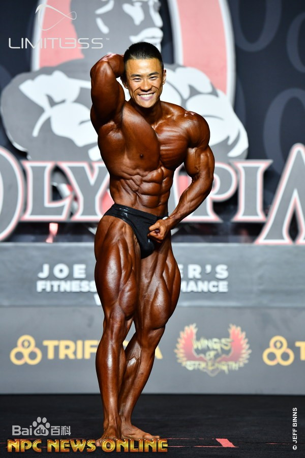
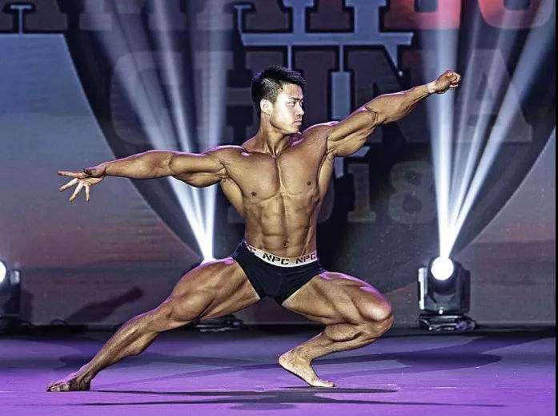
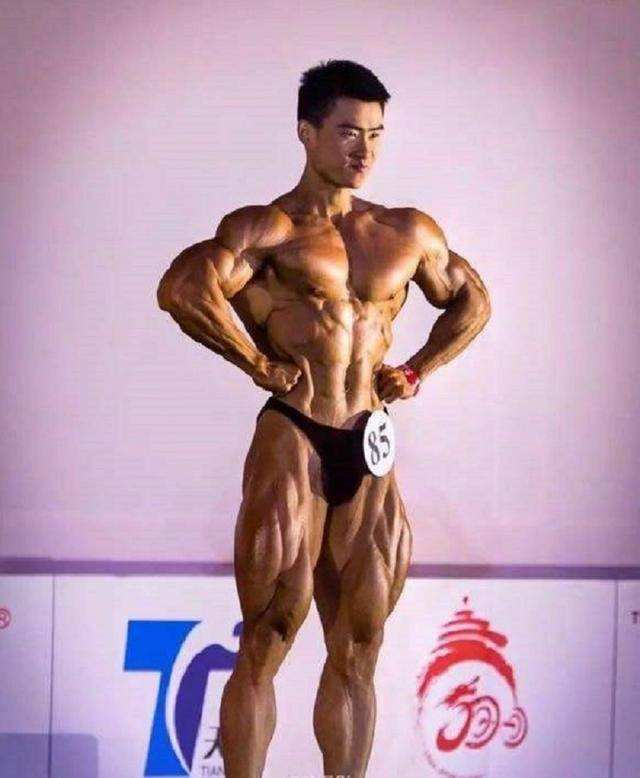

陈康
陈康,男,1988年出生,湖北荆州人, 中国健美运动员,IFBB职业联盟职业运动员。...
陈康,男,1988年出生,湖北荆州人,中国健美运动员, IFBB职业联盟职业运动员。...
重要事件
-
第五十届亚洲健美锦标赛
- 第五届亚洲沙滩运动会。
- IFBB职业联盟新西兰职业赛。
- 2018IFBB职业联盟斐济职业赛，古典健美第二名。
-
2018IFBB职业联盟巴西musclecontest职业赛
-
2019IFBB职业联盟奥林匹亚先生大赛
成就和荣誉
- 2013年全国健美锦标赛，男子健美90公斤级冠军。
- 2013年48届亚洲健美锦标赛，男子古典健美175组冠军。
-
2014年全国健美锦标赛，男子古典健美80公斤级第一名，全场冠军，混双冠军。
- 2014年第二届本·韦德钻石杯，男子古典健美冠军。
- 2014年亚洲沙滩运动会，男子古典健美176组冠军。
- 2015年全国健美锦标赛，男子健美80公斤级冠军，混双冠军。
-
2015年全国健美健身冠军总决赛，古典健美175组第一名，传统健美80公斤以上级冠军。
-
2016年第五十届亚洲健美锦标赛，男子古典健美175组别冠军，男子古典健美全场冠军。
- 2016年第五届亚洲沙滩运动会，男子古典健美176组别冠军。
- 2018IFBB职业联盟新西兰职业赛，古典健美第二名。
- 2018IFBB职业联盟斐济职业赛，古典健美第二名。
-
2018IFBB职业联盟巴西musclecontest职业赛，古典健美第一名同时获得2019年拉斯维加斯奥林匹亚先生大赛古典健美项目参赛资格。
-
2019IFBB职业联盟奥林匹亚先生大赛，古典健美无差别级决赛第五名，创造中国健美历史
基本情况
| 标题 |
信息 |
| 身高： |
1.75米 |
| 体重： |
赛季 87kg；非赛季100kg |
| 籍贯： |
湖北荆州 |
| 绰号： |
康神、肥康 |
生活照



生平
2003年5月，陈康在荆州西方红中学读初三，那时，陈康个子矮小，惟有1.米6，体重也对比轻。一地下午下课，陈康去厕所，在走廊上，学校几个小霸王有意撞了他一下，让他说声“对不起!”倔强的陈康说：“那不可能!”当天下午课间，小霸王荟萃一群学生，将陈康拖到他们班的教室里，10多小我围住陈康轮番扇他嘴巴……好在，陈康的班主任上课路过这里制止了那群学生。